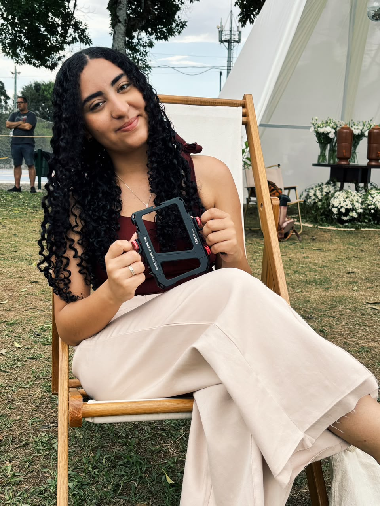

01
STORYMAKER · VIDEOMAKER
Você vive.
Eu registro.
Transformo momentos reais em vídeos que têm a sua cara — leves, espontâneos e feitos para serem lembrados.
Ver trabalhos ↗memórias
em movimento
em movimento
UM OLHAR SOBRE O MOMENTO
O melhor conteúdo acontece quando ninguém está posando.
PORTFÓLIO
Alguns momentos.
Registros espontâneos, detalhes e histórias contadas através do vídeo.
02
Detalhes que ficam
03
Histórias em movimento
04
Um jeito de lembrar

SOBRE
Mais do que gravar,
observar.
Meu trabalho nasce de um olhar atento aos pequenos detalhes: um sorriso, uma troca de olhares, uma cena que acontece sem aviso.
A ideia é simples: você aproveita o momento enquanto eu cuido de transformar aquilo em memória.
O QUE EU FAÇO
01
Eventos
Registros espontâneos para você reviver o dia.
02
Marcas
Conteúdo vertical com estética e personalidade.
03
Social Media
Vídeos pensados para aproximar sua marca das pessoas.
VAMOS CRIAR?
Deixa eu registrar
enquanto você vive.
Falar pelo WhatsApp ↗
Troque o número do WhatsApp no HTML antes de publicar.